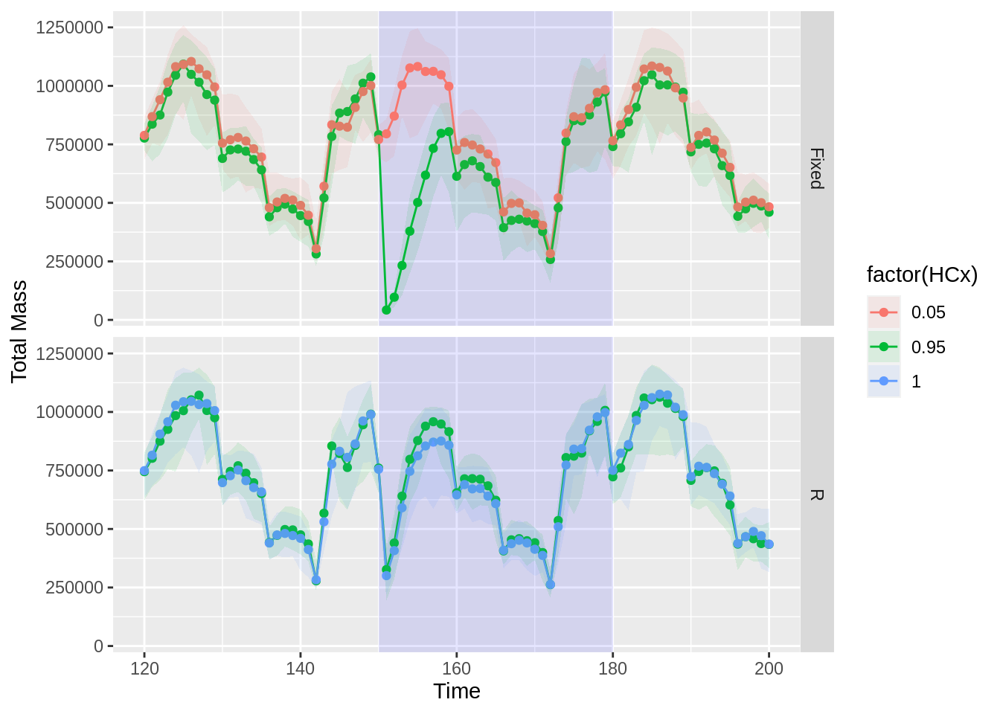
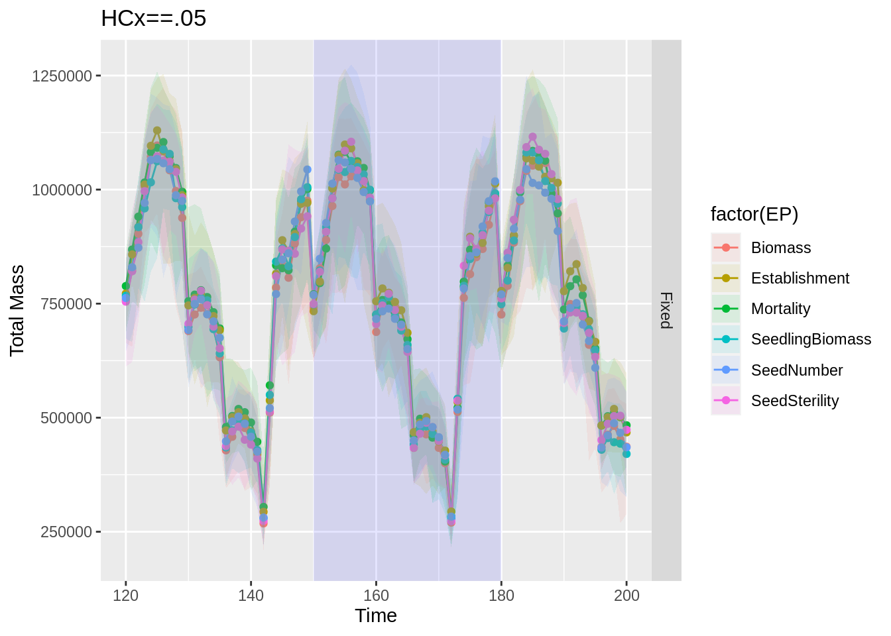

Exp.Matrix <- read_csv("~/Projects/Research/IBCgrassGUI/ExampleAnalyses/verification/Exp.Matrix.csv")Model Verification
To check if the model has issues in simulating biomass effects, we have run the model using different settings of species sensitivity to see if high sensitivity corresponds to high level of effects.
In case of HT being Fixed, the senstivitiy score is fixed as the specified HCx. In case of HT being R, the senstitivity score is generated using HCx as a threshold value, about HCx*100 % of the community plant species having scores genrated randomly between 0.25 and 1 and the rest between 0 and 0.25.
Simulaton Settings
pander::pander(Exp.Matrix)| HCx | EP | HT | PCommunity | RUN |
|---|---|---|---|---|
| 0.05 | Biomass | R | Arrhenatheretalia.txt | 1 |
| 0.95 | Biomass | R | Arrhenatheretalia.txt | 2 |
| 0.95 | Biomass | Fixed | Arrhenatheretalia.txt | 3 |
| 0.05 | Biomass | Fixed | Arrhenatheretalia.txt | 4 |
| 1 | Biomass | R | Arrhenatheretalia.txt | 5 |
| 1 | Biomass | CompletelyR | Arrhenatheretalia.txt | 6 |
| 0.95 | Mortality | R | Arrhenatheretalia.txt | 7 |
| 0.95 | Mortality | Fixed | Arrhenatheretalia.txt | 8 |
| 0.05 | Mortality | Fixed | Arrhenatheretalia.txt | 9 |
| 1 | Mortality | R | Arrhenatheretalia.txt | 10 |
| 1 | Mortality | CompletelyR | Arrhenatheretalia.txt | 11 |
| 0.95 | Establishment | R | Arrhenatheretalia.txt | 12 |
| 0.95 | Establishment | Fixed | Arrhenatheretalia.txt | 13 |
| 0.05 | Establishment | Fixed | Arrhenatheretalia.txt | 14 |
| 1 | Establishment | R | Arrhenatheretalia.txt | 15 |
| 1 | Establishment | CompletelyR | Arrhenatheretalia.txt | 16 |
| 0.95 | SeedlingBiomass | Fixed | Arrhenatheretalia.txt | 17 |
| 0.05 | SeedlingBiomass | Fixed | Arrhenatheretalia.txt | 18 |
| 0.95 | SeedSterility | Fixed | Arrhenatheretalia.txt | 19 |
| 0.05 | SeedSterility | Fixed | Arrhenatheretalia.txt | 20 |
| 0.95 | SeedNumber | Fixed | Arrhenatheretalia.txt | 21 |
| 0.05 | SeedNumber | Fixed | Arrhenatheretalia.txt | 22 |
Code to Produce Results
std <- function(x) sd(x)/sqrt(length(x))
# m1, m2: the sample means
# s1, s2: the sample standard deviations
# n1, n2: the same sizes
# m0: the null value for the difference in means to be tested for. Default is 0.
# equal.variance: whether or not to assume equal variance. Default is FALSE.
t.test2 <- function(m1,m2,s1,s2,n1,n2,m0=0,equal.variance=FALSE)
{
if( equal.variance==FALSE )
{
se <- sqrt( (s1^2/n1) + (s2^2/n2) )
# welch-satterthwaite df
df <- ( (s1^2/n1 + s2^2/n2)^2 )/( (s1^2/n1)^2/(n1-1) + (s2^2/n2)^2/(n2-1) )
} else
{
# pooled standard deviation, scaled by the sample sizes
se <- sqrt( (1/n1 + 1/n2) * ((n1-1)*s1^2 + (n2-1)*s2^2)/(n1+n2-2) )
df <- n1+n2-2
}
t <- (m1-m2-m0)/se
dat <- c(m1-m2, se, t, 2*pt(-abs(t),df))
names(dat) <- c("Difference of means", "Std Error", "t", "p-value")
return(dat)
}
t.test3 <- function(x){
res<- t.test2(x[1],x[3],x[2],x[4],n1=30,n2=30)
res["p-value"]
}
mysum <- function(x){c(mean(x),sd(x),quantile(x,c(0,0.05,0.5,0.95,1)))}
relctr <- function(ctr,trt){
(trt-ctr)/ctr
}
read_all_flist <- function(flist,Trt=TRUE,dir){
allMC <- plyr::ldply(1:length(flist),function(j){
if(Trt) dat <- data.table::fread(paste0(dir,"/1/",flist[j])) else{
dat <- data.table::fread(paste0(dir,"/0/",flist[j]))
}
dat$MC <- j
return(dat)
}
)
# allMC %>% as_tibble()%>% group_by(Time)%>%summarise(totMass=mean(totMass))
allsum <- allMC %>% as_tibble()%>% group_by(Time)%>%reframe(totMass=c(mean(totMass),sd(totMass),quantile(totMass,c(0,0.05,0.5,0.95,1))),stats=c("Mean","SD","Min.", "5th Per.", "Median" , "95th Per.", "Max." ),abovemass=mysum(abovemass),belowmass=mysum(belowmass),shannon=mysum(shannon),NInd=mysum(NInd),NPFT=mysum(NPFT))
return(allsum)
}
read_all_dirs <- function(dirs,startT=30*24,stopT=30*27,allsum0,endpoint="totMass",relative=TRUE){
runind <- sapply(str_split(dirs,"/"),function(x) x[length(x)])
names(dirs) <- runind
if(!is.null(allsum0)){
ctr <- allsum0 %>%filter(Time>startT & Time < stopT)
ctrw <- ctr%>%pivot_wider(id_cols = Time,names_from = stats,values_from = endpoint)
}
alltrt <- plyr::ldply(dirs,function(x){
flist <- grep("Grd__",list.files(paste0(x,"/1/")),value = T)
flist <- grep("Scenario_1",flist,value=T)
allsum <- read_all_flist(flist,dir=x)
if(!is.null(allsum0)){
tmp <- rbind(allsum%>%filter(stats %in% c("Mean","SD"))%>%mutate(group="TRT"),allsum0%>%filter(stats %in% c("Mean","SD"))%>%mutate(group="CTR"))
tmp1 <- tmp %>% group_by(Time) %>% summarise_at(c("totMass","abovemass","belowmass","shannon","NInd","NPFT"),~t.test3(.x))%>%mutate(stats="p-value") %>% relocate(stats,.after = totMass)
}else{
tmp <- allsum%>%filter(stats %in% c("Mean","SD"))%>%mutate(group="TRT")
tmp1 <- tmp %>% group_by(Time) %>% summarise_at(c("totMass","abovemass","belowmass","shannon","NInd","NPFT"),~t.test3(.x))%>%mutate(stats="p-value") %>% relocate(stats,.after = totMass)
}
allsum <- rbind(allsum,tmp1)
trt <- allsum %>%filter(Time>startT & Time < stopT)
trtw <- trt %>%pivot_wider(id_cols = Time,names_from = stats,values_from = endpoint)
if(relative)trtw <- trtw %>% mutate(Ctr=ctrw$Mean) %>% mutate_at(c("Mean","5th Per.", "95th Per."),~relctr(.x,ctr=Ctr)) else{
}
return(trtw)
})
return(alltrt)
}
getout <- function(endpoint="NInd",appy = c(25*30+1,26*30),recy =c(26*30+1,27*30),allsum0,dirs,Exp.Matrix){
alltrt <- read_all_dirs(dirs,startT=appy[1]-1,stopT=recy[2],allsum0,endpoint=endpoint)
alltrtw <- left_join(alltrt,Exp.Matrix%>%mutate(.id=paste0("Run",RUN)))
## allctrw <- cross_join(as.data.frame(ctrw),expand.grid(HCx=0,EP=c("Biomass","Mortality"),PCommunity="Calthion.txt"))
resdat1 <- alltrtw %>% filter(Time >= appy[1] & Time <=appy[2]) %>% group_by(HCx,EP,PCommunity,HT) %>% summarise(meandiff=mean(Mean),maxdiff=min(Mean),pval=sum(`p-value`<0.01)) %>% pivot_longer(cols = c(meandiff,maxdiff),names_to = "Yearly average")%>%mutate(Year="Application")
resdat2 <- alltrtw %>% filter(Time >= recy[1] & Time <=recy[2]) %>% group_by(HCx,EP,PCommunity,HT) %>% summarise(meandiff=mean(Mean),maxdiff=min(Mean),pval=sum(`p-value`<0.01)) %>% pivot_longer(cols = c(meandiff,maxdiff),names_to = "Yearly average")%>%mutate(Year="Recovery")
resdat <- rbind(resdat1,resdat2)
return(resdat)
}source("~/Projects/Research/IBCgrassGUI/ExampleAnalyses/runTrt_txt.R")
#####
# libraries
#####
library(foreach)
library(doParallel)
library(labeling)
library(dplyr)
#####
# Notes
#####
# -------------- Make sure to compile IBC before running this code ----------- #
# ----------------- run Model-files/CompileIBC.bat --------------------------- #
# code is copied/adapted from R-files/SimulationSpecificSettings.R
#####
# Load previously saved simulation settings
#####
# You can use the GUI to generate the SimulationSettings.Rdata
# simply run a very small test script (min. repetitions, min. years, min. grid size) and save the project
# You then might want to adapt some of the settings manually (e.g. increase repetitions, number of simulated years etc.)
#NEW ####
library(readr)
proj_dir <- "/home/sagemaker-user/Projects/Research/IBCgrassGUI"
sim_dir <- paste0(proj_dir,"/ExampleAnalyses/verification/")
path <- "Model-files/"
modelpath <- paste0(proj_dir,"/Model-files/")
setwd(proj_dir)
load(paste0(sim_dir,"/SimEnvironments/A/HerbicideSettings/SimulationSettings.Rdata"))# just as an example for this script
###################################
## Change the simulation time
#week_start <- get("IBCweekstart", envir=SaveEnvironment)-10 # start of the herbicide application (calendar week); note that IBC only simulate growing period
SaveEnvironment$IBCweekstart <- 11
SaveEnvironment$IBCRecovery <- 2 # recovery duration [years]
InitDuration <- get("IBCInit", envir=SaveEnvironment)
SaveEnvironment$IBCInit <- 5 # intial years
SaveEnvironment$BiomassEff
SaveEnvironment$BiomassEffFile
SaveEnvironment$SurvivalEff
SaveEnvironment$EstablishmentEff
SaveEnvironment$EstablishmentEffFile
SaveEnvironment$SeedNumberEff
SaveEnvironment$EffectData
SaveEnvironment$IBCrepetition <- 20
#Tmax <- InitDuration + HerbDuration + RecovDuration # years to simulate
start_time <- Sys.time()
ind <- c(1:5,7:16)
for(i in ind){
######################################################################################
HCx <- Exp.Matrix$HCx[i]
EP <- Exp.Matrix$EP[i]
HT <- Exp.Matrix$HT[i]
PCommunity <- Exp.Matrix$PCommunity[i]
setwd(proj_dir)
runtrt(HCx=HCx,EP=EP,HT=HT,PCommunity=PCommunity,
modelpath="/home/sagemaker-user/Projects/Research/IBCgrassGUI/Model-files/",
sim_dir="/home/sagemaker-user/Projects/Research/IBCgrassGUI/ExampleAnalyses/verification/",
sim_subpath=paste0("Run",i),MCruns=20,SaveEnvironment=SaveEnvironment,
genHerbFile = TRUE,
proj_dir = "~/Projects/Research/IBCgrassGUI/",
useHerbFile = "ExampleAnalyses/Arrhenatheretalia/SimEnvironments/A/HerbicideSettings/HerbFact.txt")
file.remove(paste0(proj_dir,"/",grep("Arrhenatheretalia*",list.files(proj_dir),value=T)))
}Results
dirs <- paste0("~/Projects/Research/IBCgrassGUI/ExampleAnalyses/verification/Run",c(1:5,7:22))
alltrt <- read_all_dirs(dirs,startT=30*3,stopT=30*7,allsum0=NULL,endpoint="totMass",relative = FALSE)
alltrtw1 <- left_join(alltrt,Exp.Matrix%>%mutate(.id=paste0("Run",RUN)))
#ggplot(alltrtw1,aes(x=Time,y=Mean))+annotate("rect", xmin = 5*30, xmax = 6*30, ymin = -Inf, ymax = Inf,alpha = .1,fill = "blue")+geom_line(aes(x=Time,y=Mean,col=EP))+geom_point(aes(x=Time,y=Mean,col=EP))+geom_ribbon(aes(ymin=`5th Per.`,ymax=`95th Per.`,fill=factor(HCx)),alpha=0.1)+facet_grid(EP~HT)+ylab("Total Mass")ggplot(alltrtw1%>% filter(EP=="Mortality" & HT != "CompletelyR"),aes(x=Time,y=Mean))+annotate("rect", xmin = 5*30, xmax = 6*30, ymin = -Inf, ymax = Inf,alpha = .1,fill = "blue")+geom_line(aes(x=Time,y=Mean,col=factor(HCx)))+geom_point(aes(x=Time,y=Mean,col=factor(HCx)))+geom_ribbon(aes(ymin=`5th Per.`,ymax=`95th Per.`,fill=factor(HCx)),alpha=0.1)+facet_grid(HT~.)+ylab("Total Mass")+xlim(c(120,200))
ggplot(alltrtw1%>% filter(HCx==0.95 & HT != "CompletelyR"),aes(x=Time,y=Mean))+annotate("rect", xmin = 5*30, xmax = 6*30, ymin = -Inf, ymax = Inf,alpha = .1,fill = "blue")+geom_line(aes(x=Time,y=Mean,col=factor(EP)))+geom_point(aes(x=Time,y=Mean,col=factor(EP)))+geom_ribbon(aes(ymin=`5th Per.`,ymax=`95th Per.`,fill=factor(EP)),alpha=0.1)+facet_grid(HT~.)+ylab("Total Mass")+xlim(c(120,200))+ggtitle("HCx==.95")
ggplot(alltrtw1%>% filter(HCx==0.05 & HT == "Fixed"),aes(x=Time,y=Mean))+annotate("rect", xmin = 5*30, xmax = 6*30, ymin = -Inf, ymax = Inf,alpha = .1,fill = "blue")+geom_line(aes(x=Time,y=Mean,col=factor(EP)))+geom_point(aes(x=Time,y=Mean,col=factor(EP)))+geom_ribbon(aes(ymin=`5th Per.`,ymax=`95th Per.`,fill=factor(EP)),alpha=0.1)+facet_grid(HT~.)+ylab("Total Mass")+xlim(c(120,200))+ggtitle("HCx==.05")